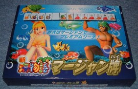
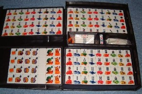

云わずとしれた人気パチンコ台「海物語」のキャラクターグッズ。そもそもはパチンコホールで景品として作られたものらしい。珍しいと云えば珍しいが、いまならネットでも５千円くらいで入手可能である。


正直言って、使い勝っ手はよろしくないと思われる。牌面にデカデカと描かれているのは、海物語のキャラクター。肝心の牌種は小さく描かれている。これでは瞬間に見分けにくい。そこであくまで実用はではなく、キャラクターグッズ。
しかしフリテン君や北斗の拳など、コミックや玩具をモチープにしたキャラクター牌は、何種類も作られている。そのレベルなら、あえて珍奇牌と言うほどのことはない。しかしこの海物語牌は、じつは歴史的商品？なのである。
麻雀は同じギャンブル的な庶民の遊びとして、パチンコにも取り入れられてきた。それが、かの有名な雀球。いまでは街の片隅で細々と遊ばれているだけらしいが、機械式からデジタル式まで、さまざまなタイプが作られた。
そのうちスロットマシンにならって、パチンコに777が揃うと大当たりという機種が登場すると、いちやくパチンコ大ブーム。その中で、単なる数字の777では面白くないというので、 や や を数字の代わりにあしらったパチンコ台も登場した。 を数字の代わりにあしらったパチンコ台も登場した。
しかし雀球にしても、数字の代わりにやをあしらった777式にしても、あくまで麻雀がパチンコに取り入れられたもの。
どのパチンコ店でも、お客に人気があるパチンコ台を求めている。そこでメーカーは、お客が喜びそうな新台の開発にしのぎを削っている。詳しいことは知らないが、むかしのバブリーな時代、１機種100万台を超える大ヒット商品はいくらでもあった（らしい）。１機種50万台くらいの売れ行きは、しょっちゅうあった（らしい）。
しかしいまはメーカー同士の競争は激しいし、当局の規制も厳しい。新機種の開発費も膨大。そこで１機種で50万台を超える売れ行きなら大ヒット。100万台超なんて夢みたいという状況（らしい）。
そんな中で海物語シリーズは、盆と正月とクリスマス、八百万の神様とお釈迦様の誕生日が一緒に来たような状況。もはや１人気機種と云うより、社会現象に近いほどの売れ行き（らしい）。そこでパチンコ店にゆくととうぜん、設置台数もいちばん多い。そして店内には海物語をあしらった足ふきマットをはじめ、イルミネーションポストなど、キャラクター商品が展示されている。
この海物語牌は、そんな状況の中で、初めてパチンコが麻雀に進出した記念すべきキャラクター商品というわけである。ふう、なんとか強引にこじつけた。(^-^；
|